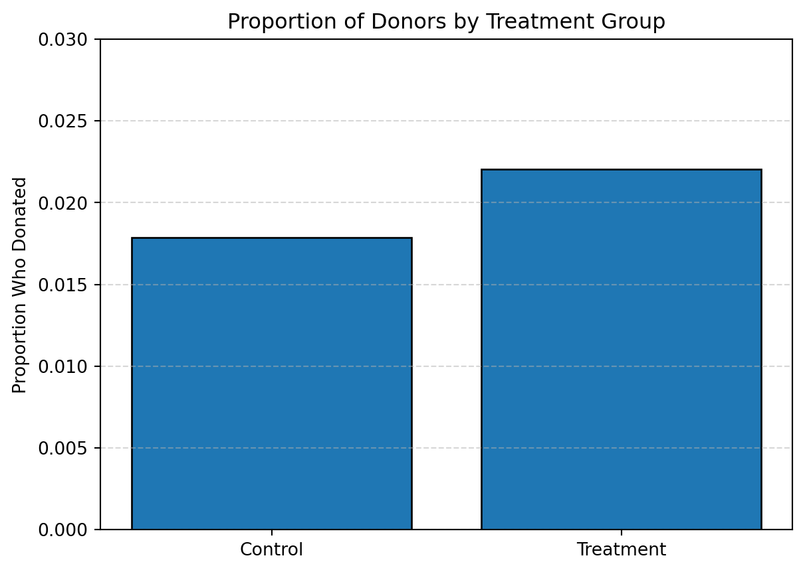
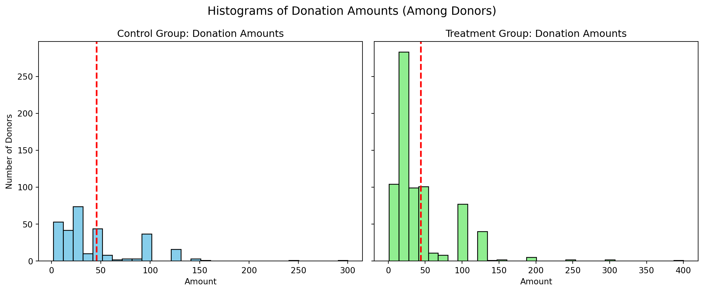
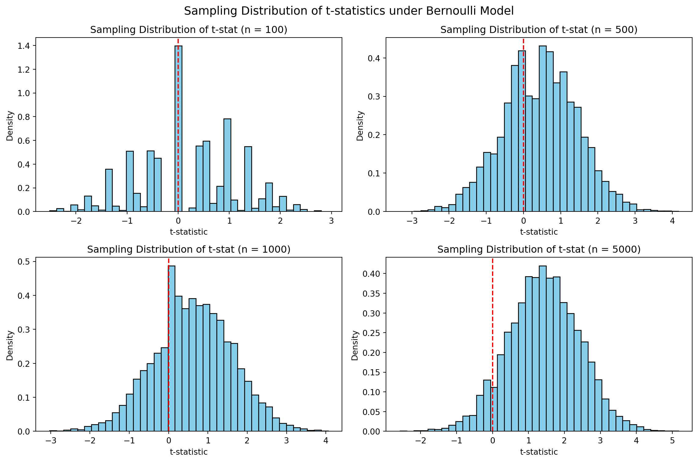
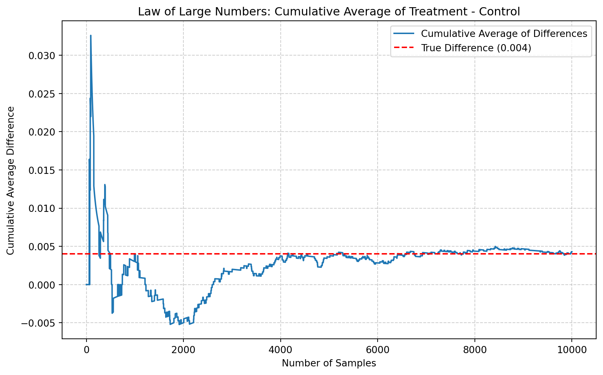
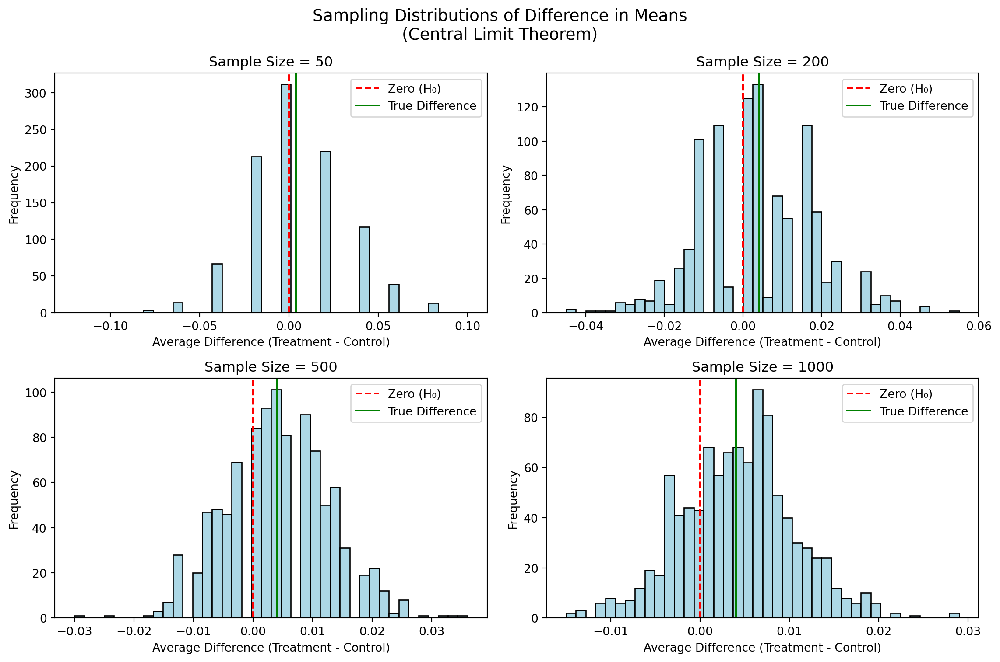

Dean Karlan at Yale and John List at the University of Chicago conducted a field experiment to test the effectiveness of different fundraising letters. They sent out 50,000 fundraising letters to potential donors, randomly assigning each letter to one of three treatments: a standard letter, a matching grant letter, or a challenge grant letter. They published the results of this experiment in the American Economic Review in 2007. The article and supporting data are available from the AEA website and from Innovations for Poverty Action as part of Harvard’s Dataverse.
To explore how different fundraising strategies influence donor behavior, Karlan and List leveraged a natural field experiment in collaboration with a real nonprofit organization. The 50,000 prior donors were randomly assigned to receive one of several versions of a direct mail solicitation. The control group received a standard appeal, while treatment groups received letters offering matching grants at different match ratios—1:1, 2:1, or 3:1. Each variation also manipulated the suggested donation amount and the maximum size of the matching gift. By analyzing the response rate and donation amounts across treatments, the authors were able to isolate the causal impact of these fundraising tactics on charitable giving.
This project seeks to replicate their results.
Data
Description
Variable Definitions
Variable
Description
treatment
Treatment
control
Control
ratio
Match ratio
ratio2
2:1 match ratio
ratio3
3:1 match ratio
size
Match threshold
size25
$25,000 match threshold
size50
$50,000 match threshold
size100
$100,000 match threshold
sizeno
Unstated match threshold
ask
Suggested donation amount
askd1
Suggested donation was highest previous contribution
askd2
Suggested donation was 1.25 x highest previous contribution
askd3
Suggested donation was 1.50 x highest previous contribution
ask1
Highest previous contribution (for suggestion)
ask2
1.25 x highest previous contribution (for suggestion)
ask3
1.50 x highest previous contribution (for suggestion)
amount
Dollars given
gave
Gave anything
amountchange
Change in amount given
hpa
Highest previous contribution
ltmedmra
Small prior donor: last gift was less than median $35
freq
Number of prior donations
years
Number of years since initial donation
year5
At least 5 years since initial donation
mrm2
Number of months since last donation
dormant
Already donated in 2005
female
Female
couple
Couple
state50one
State tag: 1 for one observation of each of 50 states; 0 otherwise
nonlit
Nonlitigation
cases
Court cases from state in 2004-5 in which organization was involved
statecnt
Percent of sample from state
stateresponse
Proportion of sample from the state who gave
stateresponset
Proportion of treated sample from the state who gave
stateresponsec
Proportion of control sample from the state who gave
stateresponsetminc
stateresponset - stateresponsec
perbush
State vote share for Bush
close25
State vote share for Bush between 47.5% and 52.5%
red0
Red state
blue0
Blue state
redcty
Red county
bluecty
Blue county
pwhite
Proportion white within zip code
pblack
Proportion black within zip code
page18_39
Proportion age 18-39 within zip code
ave_hh_sz
Average household size within zip code
median_hhincome
Median household income within zip code
powner
Proportion house owner within zip code
psch_atlstba
Proportion who finished college within zip code
pop_propurban
Proportion of population urban within zip code
Balance Test
As an ad hoc test of the randomization mechanism, I provide a series of tests that compare aspects of the treatment and control groups to assess whether they are statistically significantly different from one another.
import statsmodels.api as smfrom scipy import stats# Load datadf['treat'] = df['treatment'].fillna(0)# Balance test functiondef balance_test(var): df_sub = df[['treat', var]].dropna() treat_group = df_sub[df_sub['treat'] ==1][var] control_group = df_sub[df_sub['treat'] ==0][var]# T-test t_stat, p_val = stats.ttest_ind(treat_group, control_group, equal_var=True) mean_diff = treat_group.mean() - control_group.mean()print(f"\n==== Balance Test for '{var}' ====")print(f"T-test:")print(f" Mean (Treatment): {treat_group.mean():.3f}")print(f" Mean (Control): {control_group.mean():.3f}")print(f" Difference: {mean_diff:.3f}")print(f" t-statistic: {t_stat:.3f}")print(f" p-value: {p_val:.4f}")# OLS X = sm.add_constant(df_sub['treat']) model = sm.OLS(df_sub[var], X).fit()print("\nOLS Regression:")print(model.summary().tables[1])# Run testsfor var in ['mrm2', 'freq', 'hpa']: balance_test(var)
==== Balance Test for 'mrm2' ====
T-test:
Mean (Treatment): 13.012
Mean (Control): 12.998
Difference: 0.014
t-statistic: 0.119
p-value: 0.9049
OLS Regression:
==============================================================================
coef std err t P>|t| [0.025 0.975]
------------------------------------------------------------------------------
const 12.9981 0.094 138.979 0.000 12.815 13.181
treat 0.0137 0.115 0.119 0.905 -0.211 0.238
==============================================================================
==== Balance Test for 'freq' ====
T-test:
Mean (Treatment): 8.035
Mean (Control): 8.047
Difference: -0.012
t-statistic: -0.111
p-value: 0.9117
OLS Regression:
==============================================================================
coef std err t P>|t| [0.025 0.975]
------------------------------------------------------------------------------
const 8.0473 0.088 91.231 0.000 7.874 8.220
treat -0.0120 0.108 -0.111 0.912 -0.224 0.200
==============================================================================
==== Balance Test for 'hpa' ====
T-test:
Mean (Treatment): 59.597
Mean (Control): 58.960
Difference: 0.637
t-statistic: 0.944
p-value: 0.3451
OLS Regression:
==============================================================================
coef std err t P>|t| [0.025 0.975]
------------------------------------------------------------------------------
const 58.9602 0.551 107.005 0.000 57.880 60.040
treat 0.6371 0.675 0.944 0.345 -0.685 1.960
==============================================================================
Experimental Results
In all cases, the null hypothesis of equal means cannot be rejected, and both t-tests and OLS regressions yield identical conclusions. The treatment assignment is statistically uncorrelated with these pre-treatment variables, providing strong evidence that the randomization mechanism worked as intended.
Why this matters: Table 1 in Karlan & List (2007) serves the same purpose—showing that groups were well-balanced at baseline. This is essential for internal validity: it ensures that any post-treatment differences in giving behavior can be credibly attributed to the treatment itself, not to pre-existing differences between donors.
Charitable Contribution Made
First, I analyze whether matched donations lead to an increased response rate of making a donation.

The barplot below shows that 2.20% of individuals in the treatment group donated, compared to 1.79% in the control group.
The t-test and regression agree: the difference is statistically significant at the 1% level. Offering a matching grant increased the response rate by about 0.42 percentage points, which is approximately a 22% increase relative to the control group’s donation rate.
This replicates Table 3, Column 1 in the original paper, confirming that the treatment has a positive and statistically significant effect on the probability of donating.
These results show that simply informing potential donors that their gift would be matched made them more likely to give. Even though the absolute increase in donation rate is small, the relative effect is large and meaningful for fundraisers.
This supports the idea that donors are motivated not only by altruism, but also by how effective or impactful their contribution feels. The matching grant may act as a psychological signal that “now is a good time to give” or that their donation is more valuable than usual.
Differences between Match Rates
Next, I assess the effectiveness of different sizes of matched donations on the response rate.
# treatmenttreat_df = df[df['treat'] ==1].copy()# 1:1 vs 2:1gave_1 = treat_df[treat_df['ratio'] ==1]['gave']gave_2 = treat_df[treat_df['ratio'] ==2]['gave']t12, p12 = stats.ttest_ind(gave_1, gave_2)# 2:1 vs 3:1gave_3 = treat_df[treat_df['ratio'] ==3]['gave']t23, p23 = stats.ttest_ind(gave_2, gave_3)print(f"1:1 vs 2:1 match rate — p = {p12:.4f}")print(f"2:1 vs 3:1 match rate — p = {p23:.4f}")print(f"Means: 1:1 = {gave_1.mean():.4f}, 2:1 = {gave_2.mean():.4f}, 3:1 = {gave_3.mean():.4f}")
1:1 vs 2:1 match rate — p = 0.3345
2:1 vs 3:1 match rate — p = 0.9600
Means: 1:1 = 0.0207, 2:1 = 0.0226, 3:1 = 0.0227
The results show no statistically significant differences in donation rates between the match levels. While there is a slight increase in the mean from 1:1 to 2:1 and 3:1, the p-values (0.33 and 0.96) confirm that these differences are not distinguishable from zero at conventional significance levels.
This regression supports the t-test findings. Neither the 2:1 nor 3:1 match ratio has a statistically significant effect relative to the 1:1 match. This aligns closely with Karlan & List’s statement that “larger match ratios… had no additional impact” (p. 8).
Both direct comparisons and model-based coefficient differences tell the same story: moving from 1:1 to 2:1 yields a small and statistically insignificant increase, and going from 2:1 to 3:1 yields essentially no change at all.
These results suggest that offering a match increases the chance of donation, but increasing the match ratio further does not enhance this effect. In other words, once the donor sees their gift will be matched, the degree of matching is not very motivating. This supports the notion that framing and salience—not just raw incentive size—drive much of charitable behavior.
This provides valuable insights for fundraisers: even modest matching offers (1:1) may be just as effective as more expensive ones (2:1 or 3:1) in driving participation.
Size of Charitable Contribution
In this subsection, I analyze the effect of the size of matched donation on the size of the charitable contribution.
T-test / Regression on Full Sample
# regX_full = sm.add_constant(df['treat'])y_amount = df['amount']model_full = sm.OLS(y_amount, X_full).fit()print("OLS on all individuals:")print(model_full.summary().tables[1])
OLS on all individuals:
==============================================================================
coef std err t P>|t| [0.025 0.975]
------------------------------------------------------------------------------
const 0.8133 0.067 12.063 0.000 0.681 0.945
treat 0.1536 0.083 1.861 0.063 -0.008 0.315
==============================================================================
This suggests that offering a matching grant increased the average donation amount by about $0.15. However, the result is only marginally significant (p ≈ 0.063). Since this regression includes non-donors (who gave $0), the result likely reflects the fact that more people gave at all in the treatment group.
Regression Conditional on Donation
# limitdf_positive = df[df['gave'] ==1]X_cond = sm.add_constant(df_positive['treat'])y_cond_amount = df_positive['amount']model_cond = sm.OLS(y_cond_amount, X_cond).fit()print("\nOLS on donors only (conditional on giving):")print(model_cond.summary().tables[1])
OLS on donors only (conditional on giving):
==============================================================================
coef std err t P>|t| [0.025 0.975]
------------------------------------------------------------------------------
const 45.5403 2.423 18.792 0.000 40.785 50.296
treat -1.6684 2.872 -0.581 0.561 -7.305 3.968
==============================================================================
Among those who actually donated, individuals in the treatment group gave slightly less, on average, than those in the control group—but this difference is small and statistically insignificant.
This suggests that the treatment did not affect how much people gave, once they decided to give. The treatment influenced the extensive margin (whether to donate), but not the intensive margin (how much to donate).
Causal note: Since we are conditioning on a post-treatment outcome (gave), the regression on donors only does not have a causal interpretation. It is, however, still descriptively valuable.
Histograms of Donation Amounts (Among Donors)

The histograms show the distribution of donation amounts among donors only, with red dashed lines indicating group-specific average donations.
The treatment and control groups show similar right-skewed distributions, with most gifts clustered around $25–$75 and a few very large gifts (e.g., $250 or $400). The average donation was slightly higher in the control group, consistent with the regression results.
Simulation Experiment
As a reminder of how the t-statistic behaves under repeated sampling, I simulate the process of comparing two independent groups with known probabilities of donating:
Control group: donation follows a Bernoulli distribution with probability p = 0.018
Treatment group: donation follows a Bernoulli distribution with probability p = 0.022
I simulate the sampling and testing process many times, and observe how the t-statistic behaves under different sample sizes.
import numpy as npimport matplotlib.pyplot as pltfrom scipy import stats# Parametersp_control =0.018p_treat =0.022n_sims =10000sample_sizes = [100, 500, 1000, 5000]# Function: simulate t-statsdef simulate_t_stats(n, sims=10000): t_stats = []for _ inrange(sims): control = np.random.binomial(1, p_control, size=n) treat = np.random.binomial(1, p_treat, size=n) t_stat, _ = stats.ttest_ind(treat, control) t_stats.append(t_stat)return t_stats# Run simulationststat_results = {n: simulate_t_stats(n) for n in sample_sizes}
# Plot sampling distributionsfig, axes = plt.subplots(2, 2, figsize=(12, 8))axes = axes.ravel()for i, n inenumerate(sample_sizes): axes[i].hist(tstat_results[n], bins=40, density=True, color='skyblue', edgecolor='black') axes[i].axvline(x=0, color='red', linestyle='--') axes[i].set_title(f"Sampling Distribution of t-stat (n = {n})") axes[i].set_xlabel("t-statistic") axes[i].set_ylabel("Density")plt.suptitle("Sampling Distribution of t-statistics under Bernoulli Model", fontsize=14)plt.tight_layout()plt.show()

Interpretation When sample size is small (e.g., n = 100), the t-statistic distribution is wide and noisy — it’s hard to tell if there’s a real effect.
As sample size increases, the t-statistic distribution becomes narrower, and centered around the true difference (which is small, but positive).
This reflects the Law of Large Numbers: sample means converge to the population means.
It also illustrates the Central Limit Theorem: the difference in two sample means becomes approximately normally distributed as sample size grows.
In other words: with small samples, we might miss a real effect due to noise. But as sample size increases, our estimate of the effect and our test statistics become more stable and reliable.
Law of Large Numbers
Visualization: Cumulative Average of Differences

The plot below shows the cumulative average of the differences in donation outcomes between simulated treatment and control groups:
Initially, the average fluctuates wildly due to the high variance in small samples. For example, the first few differences swing far above and below the true mean.
As the number of samples increases, the cumulative average stabilizes and begins to hover around the true difference of 0.004, indicated by the red dashed line. This illustrates the Law of Large Numbers in practice: the more data we gather, the closer our estimate gets to the truth.
Central Limit Theorem
# Parametersp_c =0.018p_t =0.022sample_sizes = [50, 200, 500, 1000]sim_count =1000# Simulate average differences for each sample sizedef simulate_avg_diffs(n, sims=1000): diffs = []for _ inrange(sims): control = np.random.binomial(1, p_c, size=n) treatment = np.random.binomial(1, p_t, size=n) diffs.append(np.mean(treatment) - np.mean(control))return np.array(diffs)# Run simulationsresults_clt = {n: simulate_avg_diffs(n) for n in sample_sizes}

Interpretation At sample size = 50: The distribution is erratic, skewed, and shows wide dispersion. Zero is right in the center, meaning we likely wouldn’t detect a small treatment effect.
At sample size = 200: The histogram becomes more symmetric and bell-shaped, and the true effect (green line) begins to emerge away from zero.
At sample size = 500: The distribution becomes much smoother and narrower. Zero starts moving toward the tail, suggesting a higher chance of rejecting the null.
At sample size = 1000: The distribution is tightly centered near the true difference of 0.004, and zero is well into the left tail—implying we would confidently detect the effect in most samples.
These plots visually confirm the Central Limit Theorem: as sample size increases, the sampling distribution of the sample mean difference: